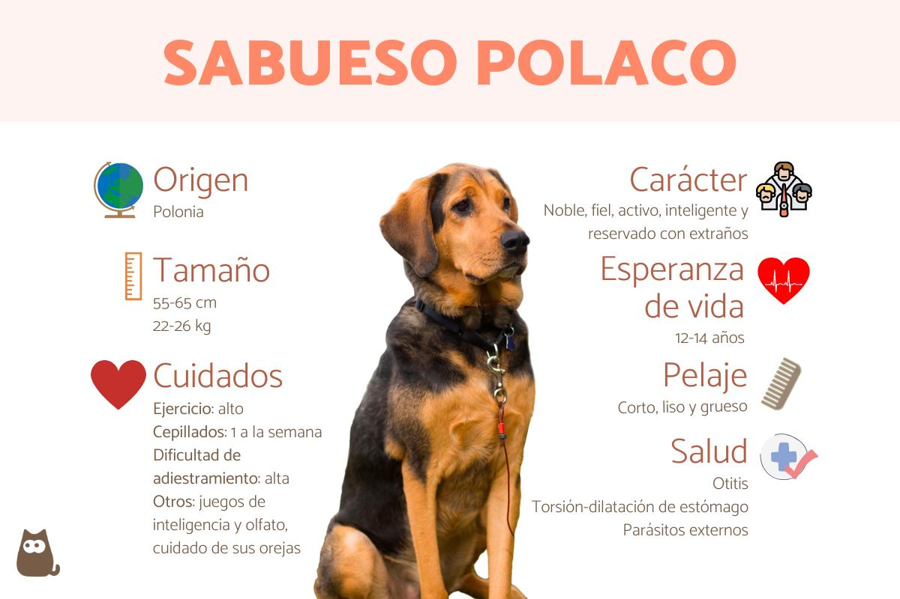

En el vasto universo de razas caninas, existe una joya poco conocida pero digna de admiración: el Kai Ken. Originario de Japón, este perro ha cautivado a amantes de los caninos en todo el mundo debido a su hermosa apariencia, historia única y rasgos distintivos. A pesar de ser una raza relativamente rara fuera de su país de origen, el Kai Ken posee una historia arraigada en la cultura japonesa, así como características físicas que lo hacen una raza muy llamativa, por ejemplo, gracias a su pelaje atigrado. Quédate y continúa leyendo este artículo de ExpertoAnimal donde exploraremos el origen, costumbres y más características del Kai Ken. ¡No te lo pierdas!

Los sabuesos polacos, también llamados ogar polski, son una antigua raza canina procedente de Polonia, como indica su nombre. Se trata de otro de los sabuesos que se desarrollaron en distintos países para acompañar a los humanos en actividades cinegéticas. Esto no quiere decir que no puedan ser unos excelentes perros de compañía, ya que, si cubrimos sus necesidades básicas a nivel físico y mental, conseguiremos ejemplares sociables, fieles y tranquilos en el hogar.
Pagina 2 